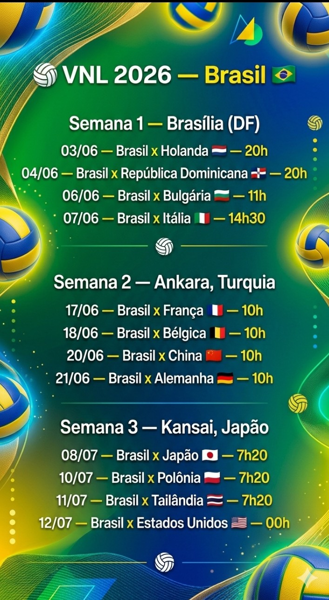

VNL – Liga das Nações de Vôlei

(Imagem gerada por inteligência artificial).
VNL – Liga das Nações de Vôlei
Não só em campo de futebol que se encontra as estrelas, Brasil também está em quadras disputando pelos títulos da Liga!
Vollleybal Nations League (VNL – que também pode ser traduzido para “Liga das Nações”) é um evento esportivo no qual acontece anualmente (entre os meses de junho a agosto, logo após o encerramento das ligas nacionais de clubes) sendo realizado pela Federação Internacional de Vôlei (FIVB) - tanto na categoria feminina e masculina. Contando também com 18 seleções em cada categoria.
Com o início em 2018, já foram feitas sete edições (a edição de 2020 foi cancelada por conta do COVID-19), e realizando sua oitava competição nesse ano. Atualmente, o maior campeão da liga feminina, é a Itália, com três títulos; levando sua última vitória contra o Brasil. Com a liga masculina, Polônia, com dois títulos e o Brasil com apenas um.
Com o primeiro e grande título da categoria masculino, a conquista veio em 2021, sob o comando do técnico Renan Dal Zotto e o capitão sendo o Bruninho. Já Wallace, o oposto, ganhou o título de MVP das partidas. O feminino ainda não possui títulos, mas essa temporada está sendo capitaneado pela jogadora Macris Carneiro até a melhora de Gabi Guimarães; junto com o técnico José Roberto. Zé comenta sobre suas expectativas, dizendo que pretendem trazer o título inédito da VNL e garantir a vaga olímpica.
Nessa temporada, o Brasil volta para as quadras. Na primeira semana de junho, joga contra Holanda, República Dominicana, Bulgária e a atual campeã, Itália. Segue o calendário abaixo.
Feito por: @dino_raaaawr